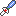
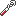

| KHOTOR | ||||||||||
|---|---|---|---|---|---|---|---|---|---|---|
|
Points de Vie | Faiblesses | Emplacement | |||||||
| 12 |  |  | Caverne du Roc, Temple du Souvenir | |||||||
| 1 PV | 2 PV | 1 PV | 2 PV | 2 PV | 30 PV | Immob. | Ignoré | |||
| Attaques | Dégâts | Conditions | Stratégie | |||||||
| Se déplace aléatoirement dans la salle et fait tourner son fléau |
|
Aucune | Utiliser les éléments disponibles pour les lui lancer. Pour l'attaquer au corps à corps, attendre que son fléau soit rétracté. | |||||||